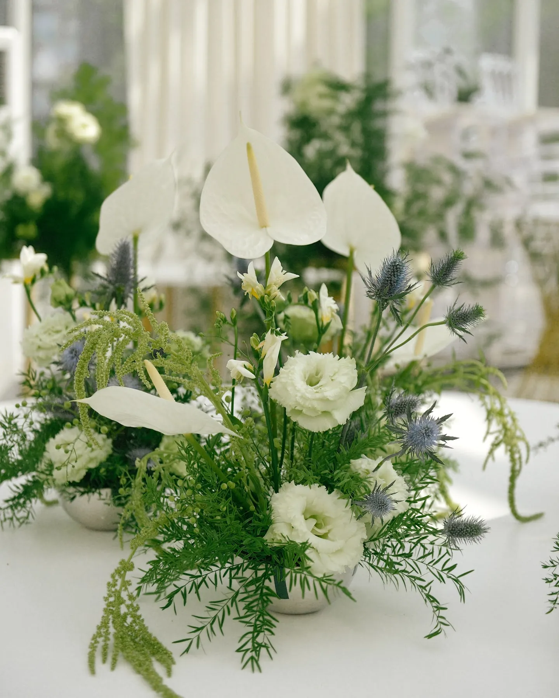
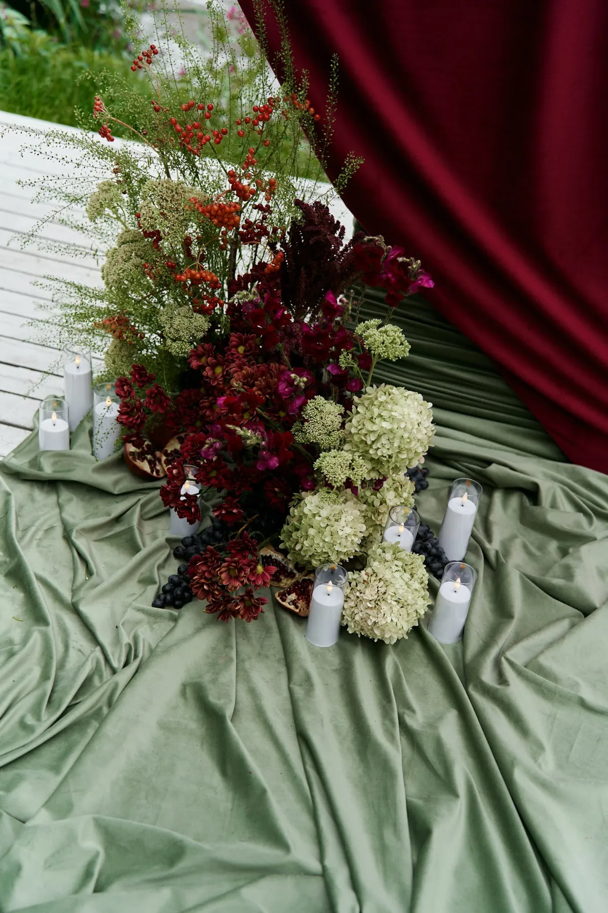
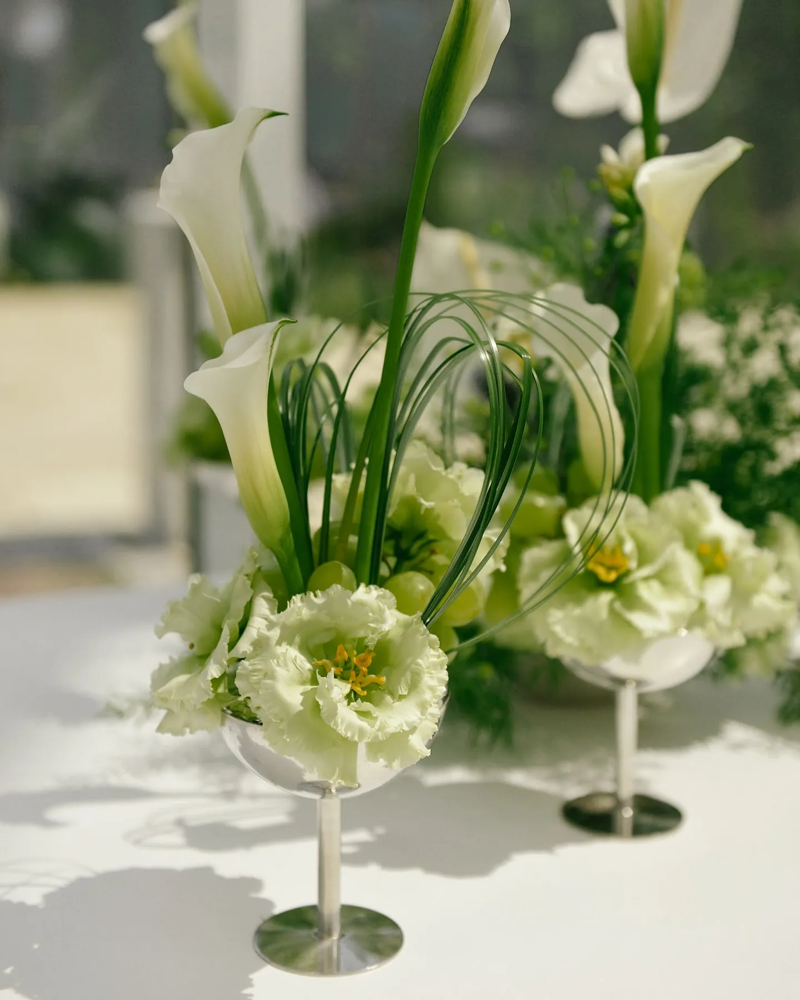
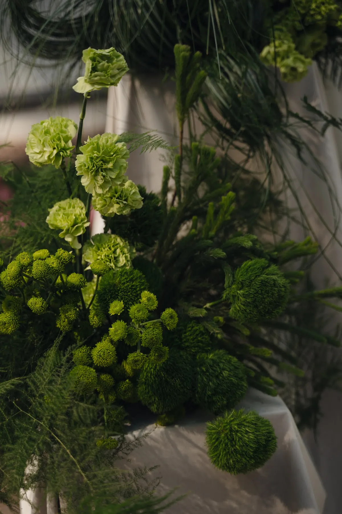

Цветы — самая живая и самая заметная часть свадебного декора. От них зависит, будет ли зал выглядеть воздушным садом, строгим и графичным или тёплым и романтичным. Разбираем, как выбрать флористику, чтобы она выглядела дорого и дожила до конца вечера.
Сначала цвет, потом сорт
Начинайте не с конкретных цветов, а с палитры: белая и зелёная флористика — спокойная и универсальная, пастель — нежная, насыщенные бордовые и винные оттенки — драматичные и вечерние. Конкретные сорта флорист подберёт под палитру, сезон и бюджет.


Форма композиций
- Пышные «облака» — много цветов одного-двух видов, дают объём и ощущение роскоши.
- Воздушные, «садовые» — цветы разной высоты с зеленью, как будто собраны в саду.
- Графичные — несколько крупных цветов с выразительной формой, много воздуха и пространства.
Одну форму лучше выдерживать по всему залу — так флористика читается как единая идея.


Сезон и стойкость
Сезонные цветы обычно свежее и выразительнее. Для жаркого лета и выездных церемоний выбирают стойкие сорта и ставят цветы как можно ближе ко времени начала — композициям нужна вода или флористическая губка. Для композиций на полу и на арке важно продумать крепление.
Совет: если вам важен конкретный цветок, скажите о нём флористу заранее — он подскажет, будет ли он в хорошем качестве в вашу дату.
Зелень, свечи и ткань
Флористика выглядит богаче, когда работает вместе с другими материалами: зелень добавляет объём и связывает композиции между собой, свечи дают тёплый свет вечером, драпировка — мягкий фон. Иногда достаточно меньшего количества цветов, если их поддерживают зелень и свет.


Как заказать
Мы делаем цветочное оформление свадеб в Москве и Подмосковье: церемония, президиум, гостевые столы, фотозоны. Расскажите о дате и площадке — предложим палитру и посчитаем смету.
Частые вопросы
Какие цветы на свадьбу самые стойкие?
Это зависит от сезона и условий площадки. Флорист подбирает сорта под погоду и формат — например, для выездной церемонии в жару.
Сколько цветов нужно для оформления свадьбы?
Зависит от количества столов, зон и формы композиций. Объём считаем после того, как понятны площадка и идея.
Можно ли использовать искусственные цветы?
Можно частично — например, в труднодоступных местах больших конструкций. Основные композиции у гостей лучше делать из живых цветов.